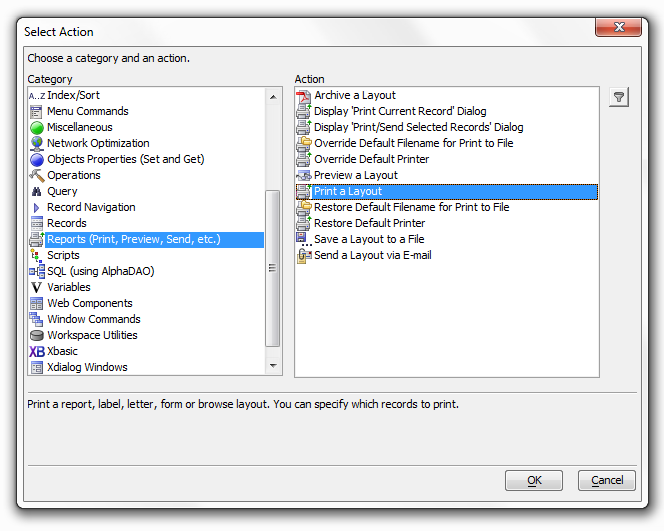
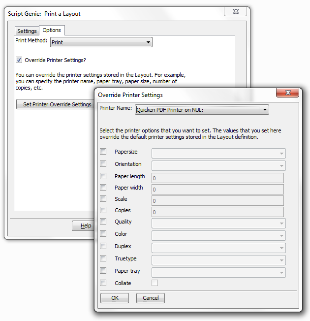

Setting Printer Options at Run Time
You can set printer options (such as Printer name, number of copies, paper tray etc.) at run time, overriding any printer settings that are saved in the layout definition. To do this, use Action Scripting to create a script to print your Layout. The Select Action dialog appears in the Code Editor. To open the Code Editor first open a workspace and then go to View > Code Editor. Once the Editor is open you can Select an Action by doing Right Click > Genies > XBasic Script Genie.

On the Options tab in the Script Genie, select the Override Printer Settings check box, and click the Set Printer Override Settings button. The Override Printer Settings Dialog will open and let you specify the values you want to override.

 Note : You can use
Xbasic to specify the filename to use when you print to file.
Note : You can use
Xbasic to specify the filename to use when you print to file.
See Also